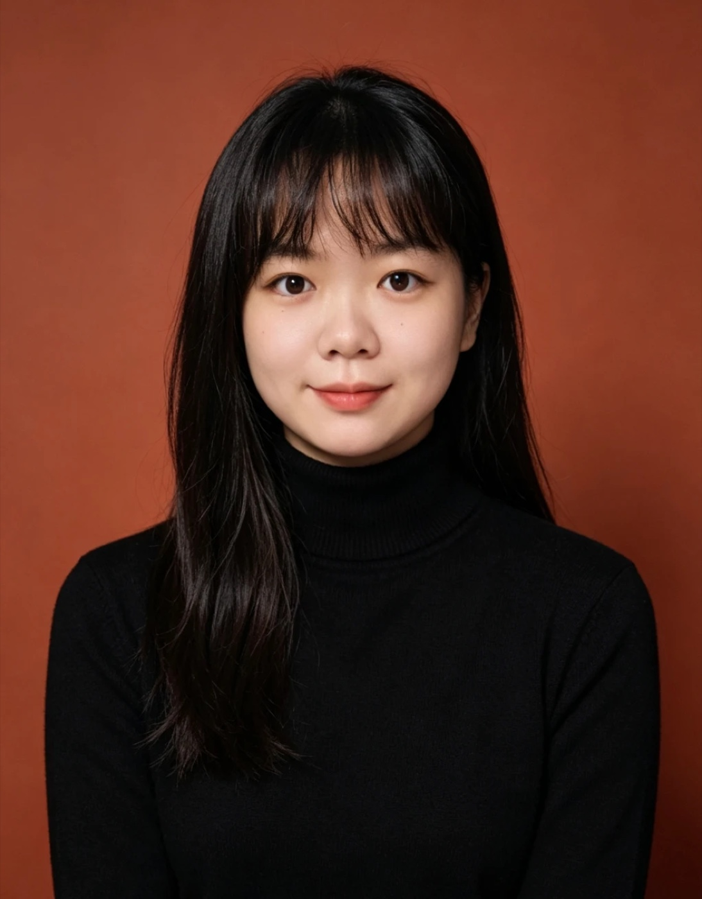
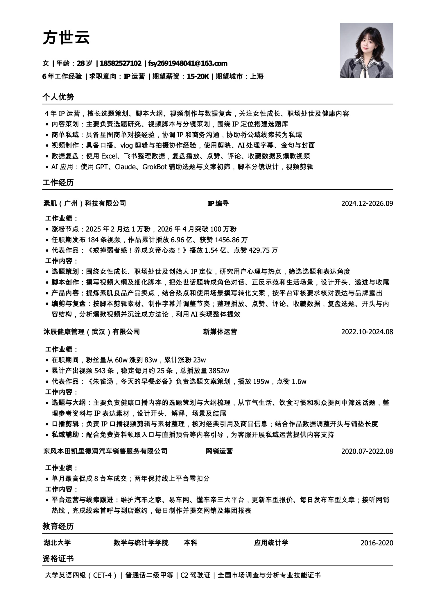

月有数
打开 ↗一张日历看清每天花了多少：余额、欠款待收回、本月预计开销，数据只存在自己浏览器里。
SCREEN REC · 00:40

做女性成长、职场处世和健康类 IP 内容。负责受众调研、选题、脚本分镜、拍摄协作和数据复盘，也用 AI 把重复的活做成工具。
素肌良品创始人 IP，福布斯 U30 与胡润 U30 上榜者。内容主线是女性成长与处世，抖音为主阵地，同步分发小红书、B 站、视频号和微博。
单条播放约占任职期总播放的 22%。用「当你感觉被冒犯」这类具体场景开头，正反示范推进，结尾落到一个马上能用的动作。下方高亮的一张就是它。
先搞清楚谁在看，再看同赛道的人在怎么做。数据来自抖音热点中心和星图连接用户画像。
女性六成，31–40 岁最多，新锐白领第一。选题落在职场处世、人情世故和自我成长。
87.2% 来自星图视频，内容一级标签集中在情感、自我成长，商单要贴着这条线做。
广东占比和偏好度都高，场景和口吻可以更贴近城市白领的日常。
商单先出大纲，把品牌卖点放进 IP 本来就在讲的场景里。选题从两处来：同赛道竞品的爆款，和全网跨赛道的高赞内容。
沿用「职场刷好感的微行为」合集形式，把场景放进搭乘同事、领导车辆，观众不觉得是广告。
空间感受 → 休息需求 → 互动演示 → 细节体验，四段情节各露一个卖点。
到达后道谢、提醒驾驶安全，落回「会说话、会照顾他人」。
每一镜写清场景、人物动作、景别、口播与字幕、妆造道具和时间点。拍摄现场照着走，剪辑照着对，原片抽帧作为参考画面。
中景低头看手机 → 近景转头直视镜头，用一个眼神完成「沉默注视是最好的回应」。
同一场景先做错误示范再做正确示范，字幕标出「习惯性张嘴」和「合上嘴巴」。
情景演绎，台词写到具体一句，备注「纯属虚构、餐厅出品很好」规避风险。
单条爆款靠手感，稳定出爆款靠系统。素材分类入库，内容按固定链路生产，数据回来再决定沉淀还是重做。
用户心理研究 + 热点追踪
竞品与全网爆款
开头、递进、收尾
字幕、节奏、封面
播放、赞、评、藏
爆款方法论 · 星图商单 · 公域转私域
数据没达标：复盘开头与结构，回到选题换角度重做。
东风本田，维护汽车之家、易车、懂车帝
两年线上平台零扣分
张沐辰，接手 60 万粉健康账号
543 条视频，总播放 3852 万
IP 编导，女性成长创始人 IP
选题库与脚本结构跑通
14 个月，1 万 → 100 万
获赞 1456.86 万
把做过的项目拆成可以复用的东西：一棵从调研到产出的 IP 大脑，一组公开在 GitHub 上的 Skill，日常积累的笔记，和一个运营知识库。
① 调研 ② 定方案。内部了解业务和 IP，外部看市场、竞品和爆款。
③ IP 大脑：灵魂文档、用户档案、工作流 SOP、工具箱，四份核心文档。
④ 热点监控 → ⑤ 选题 → ⑥ 文案脚本 → ⑦ 拍摄剪辑分发。
⑧ 素材库 ⑨ Skill 技能包 ⑩ 语料收集，结出可复用到任意 IP 的知识库。
本地优先的个人图片标签素材盒 Skill，附可运行的 Vite + IndexedDB 模板
JavaScript musetag-skillAI 看图，从受控设计词库推荐标签，人只需确认或删除
JavaScript douyin-card-cover-extractor提取抖音视频未点开前的主页作品卡片封面，并逐张质量检查的 Codex Skill
ziranyun-shot-library自然云聊健康 · 镜头与动效资产库
TypeScript ai-method-library自然云 AI 方法库
HTML vegetables-fruits《蔬菜水果》Remotion 短片镜头模版：扇形卡片展开
TypeScript老板不能抄别人的稿子，要借的是爆款的框架，再用访谈挖出老板自己的经历。
黄金三秒之外，长期影响力靠什么积累。
提示词、评审与迭代方法。
用 Claude Code 和 Codex 把重复的活交给工具：抓数据、拆爆款、写分镜、做封面。下面是我的视频制作技能库，以及顺手做的几个小工具。
工作之外，我也在自己做账号：健康内容同步到抖音、小红书和公众号，另有一个 AI 科普账号。从选题、封面到发布都是自己完成。
